VQSD_claude — Paper Curation
Research Timeline
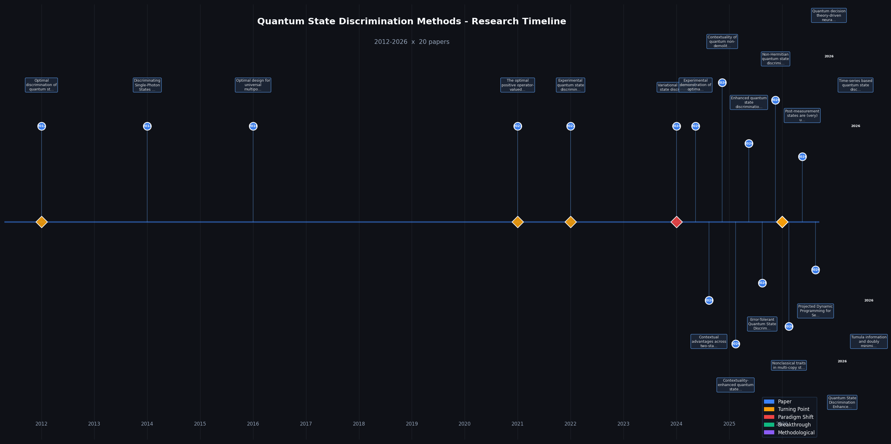
양자 상태 판별(Quantum State Discrimination, QSD) 분야는 2012년부터 2026년에 이르기까지 이론적 정초에서 실험적 실현, 그리고 하드웨어 가속 구현으로 이어지는 뚜렷한 발전 궤적을 그려왔다. 2012년에는 불확정 결과 고정률 전략(Fixed-Rate Inconclusive Outcome, FRIO) 이론 체계가 확립되면서, 명확판별(Unambiguous Discrimination, UD)과 최소오류판별(Minimum-Error Discrimination, ME) 사이를 연속적으로 잇는 통합 분석 틀이 마련되었다. 이 이론은 약 10년간의 공백을 거쳐 2022년 이중경로 사냑 간섭계(Double-path Sagnac Interferometer)를 활용한 최초의 실험적 구현으로 검증되었으며, 3결과 비사영 측정(Non-projective Measurement)의 가능성을 물리적으로 입증하였다. 2021년에는 라그랑주 승수(Lagrange Multiplier) 기반 최적 양자측정(POVM) 유도 연구가 홀레보 한계(Holevo Bound)보다 엄밀한 경계를 제공함을 보여 분석적 최적화 접근의 재조명을 이끌었다. 이후 2024년에는 변분 양자 상태 판별기(Variational Quantum State Discriminator, VQSD)가 제안되어 근미래 양자 하드웨어(NISQ) 환경에서 지도 학습 기반 판별을 가능하게 하는 하이브리드 양자-고전 패러다임을 열었다. 2026년에는 복수의 연구가 동시에 수렴하며 분야 전체를 재편하고 있는데, 일반화된 맥락성(Generalized Contextuality)이 명확판별·최소오류판별·최대신뢰도판별 등 세 가지 주요 전략 모두에서 판별 우위의 자원임이 확립되어 자원이론적(Resource-Theoretic) 통합 틀이 완성 단계에 접어들었다. 아울러 PT-대칭 해밀토니안(PT-Symmetric Hamiltonian)을 활용한 비에르미트(Non-Hermitian) 양자 판별 연구는 에르미트 측정이론의 기본 가정에 도전하며, 비직교 상태의 명확판별을 위한 새로운 메커니즘을 제시하였다. 실용적 측면에서는 FPGA 기반 AI 엔진과 LSTM 신경망을 활용한 초전도 큐비트 실시간 판별 기술이 등장하여 대규모 양자 시스템의 고처리율 측정 후처리 수요에 응답하고 있다. 향후 이 분야는 맥락성 및 비에르미트 물리학이 제공하는 새로운 자유도를 활용하여 이론적 최적성과 근미래 하드웨어 구현을 직접 연결하는 방향으로 발전할 것으로 전망된다.
Research Insights 7 findings

Category Overview
양자상태판별(Quantum State Discrimination, QSD) 방법론은 주어진 양자 시스템이 여러 가능한 상태 중 어느 것인지를 구분하는 기본적인 양자 정보 처리 과제입니다. 이 카테고리의 22편 논문들은 광자(photon) 기반의 단일 상태 판별부터 다중 복사본(multi-copy) 판별까지 다양한 물리적 구현과 이론적 최적화 전략을 다룹니다[001][002][003][004][005]. POVM(양의 연산자값 측정, Positive Operator-Valued Measure) 등의 최적 측정 방식[006][008]과 순차적 판별 프로토콜[017], 그리고 신경망을 활용한 비직교 상태 판별[007][018] 등 다층적인 접근법이 제시됩니다. 특히 문맥성(Contextuality)을 이용한 판별 성능 향상[009][010][011][012], 비에르미트 연산자 기반 방식[014], 오류 허용성(Error-Tolerant) 최적화[013] 등은 양자역학의 근본적 특성을 활용하는 혁신적 방법들입니다. 더욱이 측정 후 상태(Post-measurement state) 활용[016], FPGA 기반 AI 엔진[020], 시계열 분석[021] 등 최신 기술과의 융합 연구도 포함되어 양자상태판별 분야의 실험적·이론적 진전을 종합적으로 보여줍니다.
⚠ 갭: 이론적 발전에 비해 고차원 qudit 시스템과 노이즈 환경에서의 통합적 실험 검증이 현저히 부족하여 이론-실험 간 격차가 심화되고 있다.
🏛 정책: 양자 상태 판별 분야의 이론-실험 연계 및 AI 융합 연구를 위한 집중 지원 프로그램을 국가 양자 전략에 명시적으로 포함시켜야 한다.
Discriminating Single-Photon States Unambiguously in High Dimensions
본 논문은 궤도각운동량(OAM) 인코딩을 이용하여 고차원 단일광자 상태를 명확하게 구별하는 실험을 수행하였으며, d=2에서 d=14까지의 차원에서 최소오류 상태판별보다 낮은 오류율을 달성했다.
본 논문은 고차원 양자상태의 명확한 판별을 체계적으로 실증한 획기적 연구로, OAM을 활용한 확장성 높은 프로토콜과 함께 실험적 한계를 크게 확장했다. 양자정보 응용 분야에서 즉시 활용 가능한 중요한 기술적 기여를 제시했으나, 고차원 증가 시 성능 저하 분석과 실제 응용 환경 검증이 후속과제로 남아있다.
Experimental quantum state discrimination using the optimal fixed rate of inconclusive outcomes strategy
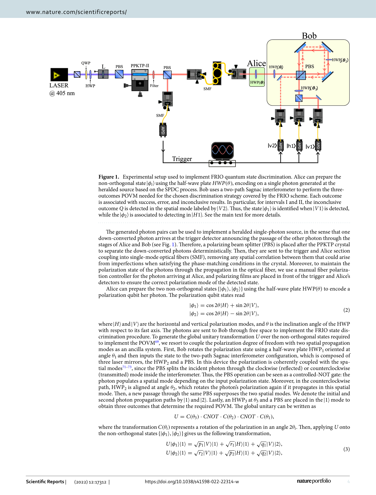
Figure 1. Experimental setup used to implement FRIO quantum state discrimination. Alice can prepare the
 *Figure 1. Experimental setup used to implement FRIO quantum state discrimination. Alice can prepare the* 본 논문은 고정된 결정 불가 결과율(FRIO) 전략을 사용하여 직교하지 않는 두 양자 상태를 최적으로 판별하는 실험을 수행했으며, double-path Sagnac interferometer를 활용한 3-outcome non-projective measurement를 구현했다.
본 논문은 FRIO 양자 상태 판별 전략을 처음으로 완전히 실험 구현하고 double-path Sagnac interferometer라는 혁신적 기술을 도입하여 높은 노벨티와 실용성을 갖춘다. 이론과 실험의 일치도가 우수하며 향후 양자 정보 응용에 확장 가능한 유연한 플랫폼을 제시하여 학문적·실용적 의의가 크다.
Optimal design for universal multiport interferometers
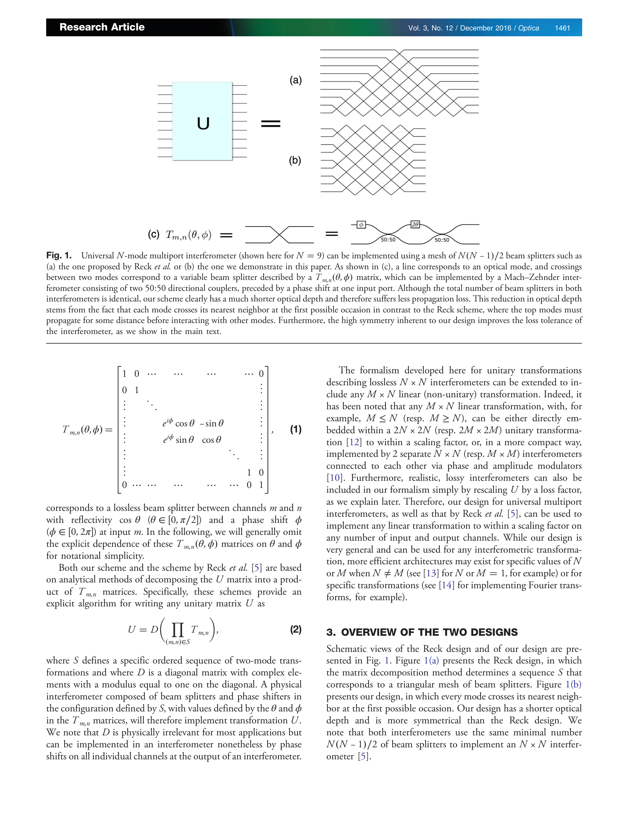
Fig. 1.
 *Fig. 1.* Universal multiport interferometer의 새로운 설계를 제안하여 기존 Reck 설계 대비 광학 깊이를 절반으로 줄이고 손실 견고성을 크게 향상시켰다.
이 논문은 universal multiport interferometer의 설계를 근본적으로 개선한 중요한 기여로, 광학 깊이 감소와 손실 견고성 향상이라는 실질적 이점을 수학적 엄밀성과 함께 제시한다. 양자 및 고전 광자 응용 분야에서 광범위한 영향을 미칠 수 있는 결과이다.
Optimal discrimination of quantum states with a fixed rate of inconclusive outcomes
양자 상태 판별 문제에서 고정된 비율의 결정 불가능 결과를 허용할 때 최적 판별 전략을 제시하며, 이는 명확한 판별(UD)과 최소 오류 판별(ME) 사이를 보간한다.
이 논문은 FRIO 문제를 처음으로 일반적으로 해결하는 우아한 변환 방법을 제시하며, UD, ME, MC 판별을 통합하여 양자 상태 판별의 완전한 이론적 그림을 제공한다.
Sequential Discrimination Between Non-Orthogonal Quantum States
본 논문은 비직교 양자 상태의 순차적 판별 문제를 다룬다. Alice가 보낸 두 개의 알려진 순수 상태 중 하나를 Bob과 Charlie가 순차적으로 판별하는 체계를 연구한다.
본 논문은 양자 상태 판별의 기본 문제를 순차적 다중 수신자 구조로 확장하여 새로운 프레임워크를 제시한 우수한 연구이다. 양자 역추론 등 창의적인 접근법과 엄밀한 수학적 분석을 통해 양자 정보 이론에 기여하며, 양자 통신 및 양자 알고리즘의 이론적 기초를 강화한다.
The optimal positive operator-valued measure for state discrimination
본 논문은 비직교 양자 상태를 구별하기 위한 최적 POVM(positive operator-valued measure) 측정을 Lagrange 승수법으로 유도하고, 이것이 Holevo bound보다 더 타이트한 상한을 제공함을 보인다.
본 논문은 양자 상태 구별을 위한 최적 POVM을 체계적으로 유도하고 Holevo bound의 느슨함을 개선하는 중요한 이론적 기여를 제시한다. 다만 n개 상태로의 일반화와 실제 시뮬레이션 결과 제시가 보강된다면 더욱 완성도 있을 것이다.
Variational quantum state discriminator for supervised machine learning
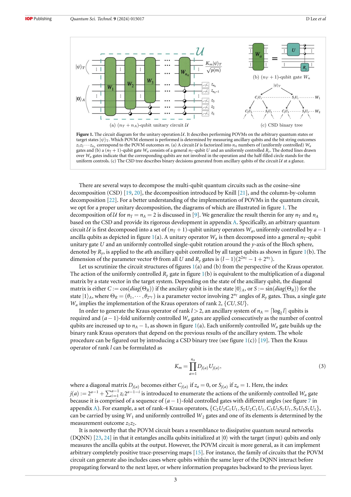
Figure 1. The circuit diagram for the unitary operation U. It describes performing POVMs on the arbitrary quantum states
 *Figure 2. Illustration of the variational quantum state discriminator. The input circuit prepares a set of arbitrary qua* 양자 상태 판별(QSD)을 위한 변분 양자 알고리즘(VQSD)을 제시하며, 이를 지도 학습 기반 다중 분류 문제에 적용한다.
본 논문은 양자 상태 판별을 위한 실용적인 변분 양자 알고리즘을 제시하고 이를 기계 학습에 응용한 창의적인 연구로, 양자 컴퓨팅과 기계 학습의 결합 분야에 유의미한 기여를 한다. 다만 실제 양자 장치 구현이 필요하다.
Experimental demonstration of optimal measurement for unambiguously discriminating asymmetric qudit states
본 논문은 비대칭 qudit 상태를 최적으로 식별하기 위한 사영 측정 방식을 제시하고, OAM 광자를 이용하여 Laguerre-Gaussian 모드로 인코딩된 비대칭 qutrit 상태의 명확한 식별을 실험적으로 시연한다.
본 논문은 비대칭 양자 상태의 최적 식별이라는 중요한 이론적 문제를 해결하고, 이를 OAM 광자를 통해 성공적으로 실험 구현함으로써 양자 정보 기술의 실용화에 기여한다. 명확한 이론 전개와 체계적인 실험 시연으로 높은 학술 가치를 지닌다.
Contextual advantages across two-state discrimination strategies
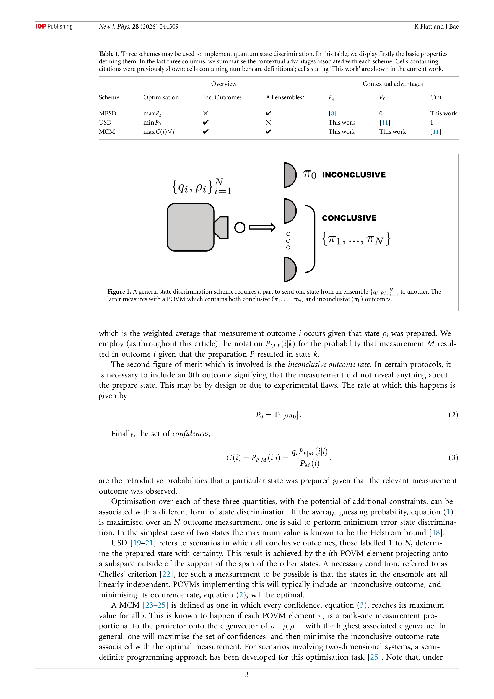
Figure 1. A general state discrimination scheme requires a part to send one state from an ensemble {qi,ρi}N
 *Figure 2. The confidence C(1) in both quantum (solid black line) and noncontextual (dashed blue line) theories for pure * 이 논문은 양자 상태 판별(quantum state discrimination)의 세 가지 전략(최소-오류, 명확한, 최대-신뢰도)에서 일반화된 문맥성(generalised contextuality)을 모두 증명할 수 있음을 보여준다.
이 논문은 양자 상태 판별과 일반화된 문맥성의 관계를 두 상태 앙상블에 대해 완전히 매핑함으로써 이론적 완결성을 제공하며, 모든 판별 전략과 성능 지표에서 양자 이점을 보임으로써 양자 정보 응용의 일반적 우월성을 강화한다.
Contextuality of quantum non-demolition measurement via state discrimination
양자 비파괴 측정(QND measurement)의 구조에 내재된 문맥성(contextuality)을 이론적으로 규명하고, 명확한 상태 판별(unambiguous state discrimination)과 순차적 판별, 확률적 양자 복제 프로토콜에서 고전적 모델의 한계를 입증한다.
QND 측정의 문맥적 구조를 체계적으로 규명하고 여러 양자 정보 처리 프로토콜로 확장한 이론적 기여가 우수하며, 양자 통신과 센싱 기술의 기초를 강화한다. 다만 실험적 검증 및 노이즈 환경에서의 정량적 분석 강화가 임팩트 증대에 필요하다.
Contextuality-enhanced quantum state discrimination under fixed failure probability
고정된 실패 확률 조건에서 양자 상태 판별의 맥락성(contextuality) 향상을 이론적으로 입증하고, 맥락성 향상이 사라지는 중간 실패 확률 범위가 존재함을 보여준다.
본 논문은 고정 실패 확률 조건에서 양자 맥락성 향상의 매우 섬세한 구조를 처음으로 규명하였으며, 비향상 영역이라는 새로운 현상을 발견하여 양자 상태 판별의 근본적 이해를 크게 진전시켰다.
Enhanced quantum state discrimination under general measurements with entanglement and nonorthogonality restrictions
양자 상태 판별에서 auxiliary 시스템과의 얽힘이나 비직교성을 활용하여 Helstrom 한계 이하의 오류 확률을 달성할 수 있으며, 초기 얽힘 없이도 non-positive operator-valued measurements (NPOVMs)가 자연스럽게 발생함을 보인다.
본 논문은 양자 상태 판별의 기본 한계인 Helstrom bound를 넘어서는 새로운 경로를 제시하며, 초기 얽힘 없이도 비표준 측정이 자연스럽게 발생할 수 있음을 보인 점에서 양자 정보 이론의 기초적 이해를 크게 향상시킨다. 다만 발표된 내용이 도입 부분에 집중되어 있어 핵심 정리와 증명의 엄밀성, 그리고 실험적 가능성에 대한 완전한 평가는 전체 논문 검토 후 가능할 것으로 보인다.
Error-Tolerant Quantum State Discrimination: Optimization and Quantum Circuit Synthesis
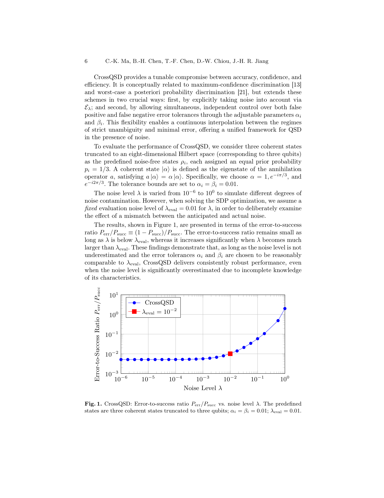
 *Fig. 5. Quantum circuit synthesis workflow for QSD.* 양자 상태 판별(QSD)에서 노이즈에 강건한 전략들을 개발하고, 최적화 문제를 convex programming으로 공식화하며, 수정된 Naimark dilation과 isometry synthesis를 통해 회로 구현을 제공한다.
본 논문은 노이즈 환경에서의 양자 상태 판별에 대한 포괄적이고 체계적인 해결책을 제시하며, convex optimization 공식화와 회로 합성 프레임워크를 통해 이론과 실무를 연결한다. 오픈소스 툴킷 제공으로 실제 양자 장치 구현의 실질적 기초를 마련했다는 점에서 학술적·실용적 가치가 모두 높다.
Non-Hermitian quantum state discrimination and information flow
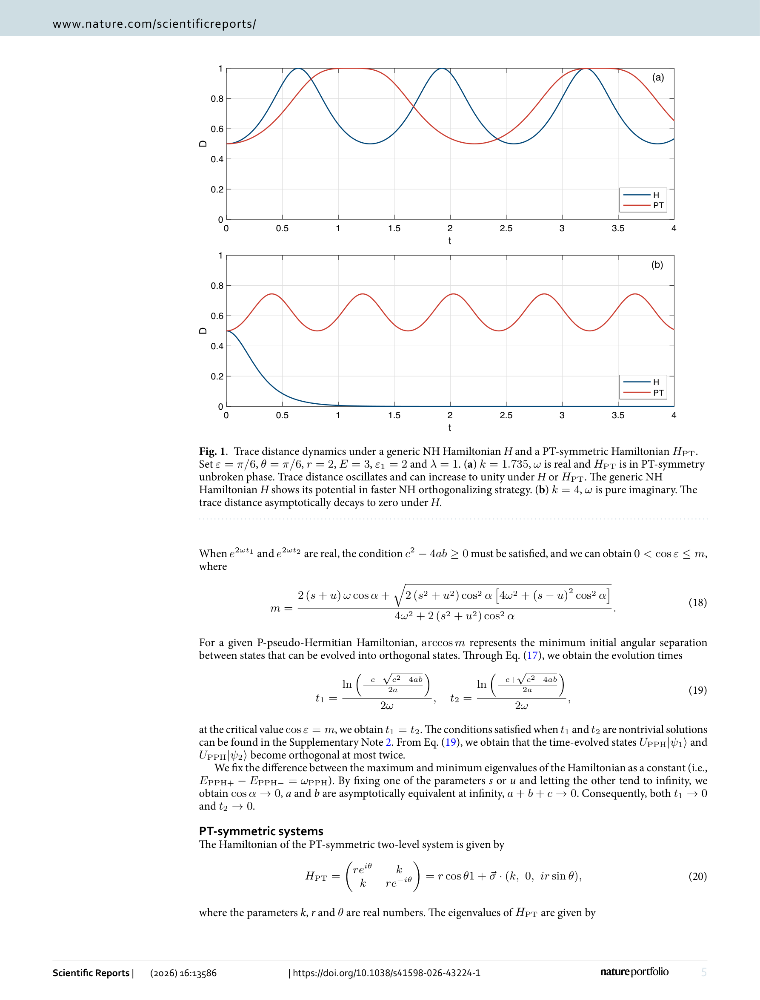
Fig. 1. Trace distance dynamics under a generic NH Hamiltonian H and a PT-symmetric Hamiltonian HPT.
 *Fig. 1. Trace distance dynamics under a generic NH Hamiltonian H and a PT-symmetric Hamiltonian HPT.* 비에르미트(non-Hermitian) 양자 시스템에서 PT-대칭 및 P-pseudo-Hermitian 해밀토니안을 이용하여 비직교 양자 상태의 명확한 판별을 실현할 수 있으며, 비에르미트 고유상태의 비직교성이 양자 상태 판별의 근본 원리임을 규명했다.
이 논문은 비에르미트 양자 역학을 양자 상태 판별 문제에 체계적으로 적용하여 기존의 대칭성 기반 접근을 넘어 비직교 고유상태의 근본적 역할을 규명했으며, 깨진 위상과 일반 복소 스펙트럼으로의 확장을 통해 높은 독창성과 중요성을 보유하고 있다.
Nonclassical traits in multi-copy state discrimination
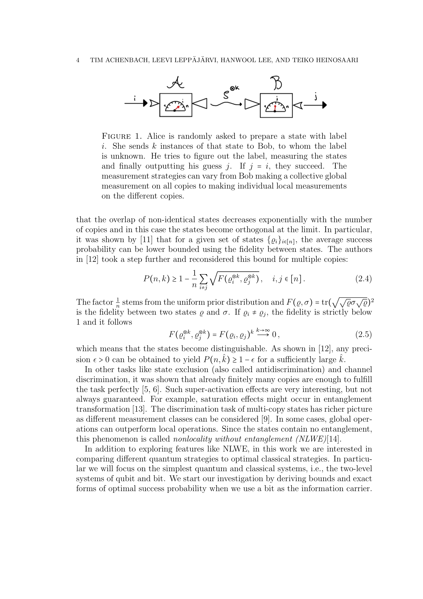
Figure 1. Alice is randomly asked to prepare a state with label
 *Figure 1. Alice is randomly asked to prepare a state with label* 다중 복사본 양자 상태 판별에서 전역 측정과 국소 측정 전략을 비교하여, 양자 이론이 고전 이론을 초월하는 조건을 규명하고 얽힘 없는 비국소성(nonlocality without entanglement)을 발견한다.
이 논문은 다중 복사본 상태 판별에서 양자 이론과 고전 이론의 경계를 명확히 하고, 측정 전략의 최적성을 체계적으로 분석함으로써 양자 정보 이론의 기초와 실제 응용 모두에 중요한 기여를 한다. 특히 일반화된 operational theories 프레임워크를 통해 논의를 일반화한 점이 높이 평가된다.
Post-measurement states are (very) useful for measurement discrimination
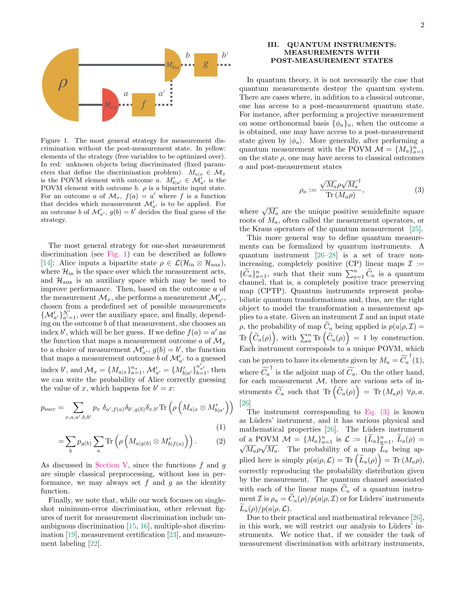
 *Figure 2. Most general strategy for instrument discrimina-* 양자 측정 판별(quantum measurement discrimination) 과제에서 측정 후 양자 상태(post-measurement state)를 활용하면 성능을 크게 향상시킬 수 있음을 보이는 연구이다. Lüders instrument를 통해 POVM 연산자뿐만 아니라 이에 대응하는 사후 측정 상태까지 고려한 판별 문제를 정의하고 분석한다.
이 논문은 양자 측정 판별 이론에 중요한 새로운 관점을 제시하며, 사후 측정 상태의 활용이 성능을 임의로 크게 향상시킬 수 있음을 엄밀하게 증명한다. 양자 정보 처리 기본 문제에 대한 깊이 있는 기여로서 높은 가치를 지닌다.
Projected Dynamic Programming for Sequential Quantum State Discrimination
Sequential Quantum State Discrimination (SQSD)을 static-hidden-state POMDP 프레임워크로 형식화하고, 신념 심플렉스와 측정 공간을 이산화한 Projected Dynamic Programming을 통해 근사 오차 및 계산 복잡성을 엄밀하게 분석한다.
본 논문은 sequential quantum state discrimination을 POMDP로 형식화하고 projected dynamic programming의 근사 오차와 계산 복잡성을 엄밀하게 분석한 견고한 이론적 기여이며, conventional QSD와의 consistency 증명과 기하학적 시각화를 통해 개념적 깊이도 제공한다.
Quantum decision theory-driven neural networks for non-orthogonal quantum state discrimination
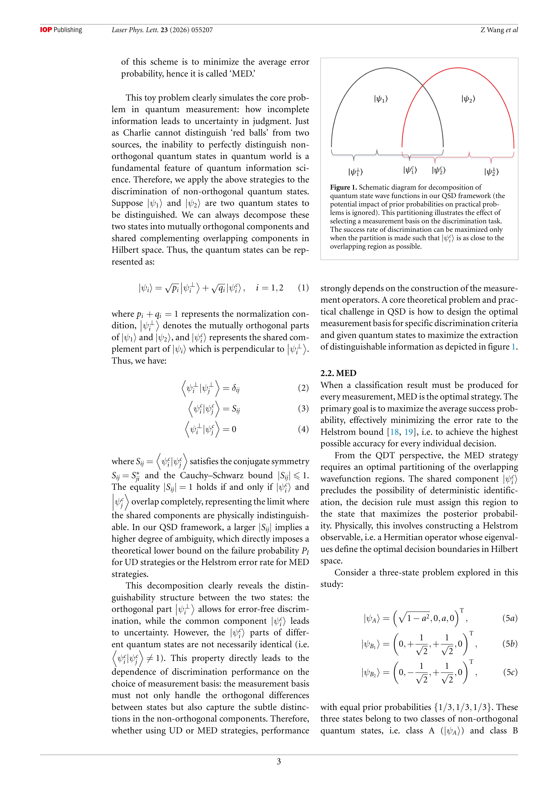
 *Figure 2. Complete circuit diagram for VQSD, where U1* 본 논문은 양자 결정 이론(quantum decision theory)에 기반한 변분 양자 회로를 통해 직교하지 않는 양자 상태 판별(non-orthogonal quantum state discrimination)을 수행하며, NISQ 시대에 실용적이고 해석 가능한 프레임워크를 제시한다.
본 논문은 양자 상태 판별 문제에 양자 결정 이론을 처음으로 체계적으로 적용하여 물리적으로 정당화된 신경망 아키텍처를 제시한다. NISQ 시대의 실용적 양자 알고리즘 설계에 중요한 기여를 하며, 실제 양자 프로세서에서의 우수한 성능 입증으로 높은 가치를 가진다.
Quantum State Discrimination Enhanced by FPGA-Based AI Engine Technology
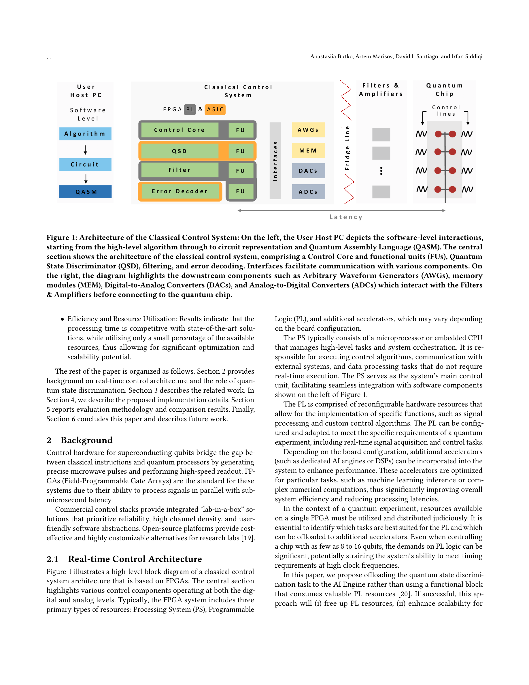
Figure 1: Architecture of the Classical Control System: On the left, the User Host PC depicts the software-level interac
 *Figure 1: Architecture of the Classical Control System: On the left, the User Host PC depicts the software-level interac* 본 논문은 AMD Xilinx VCK190 FPGA의 AI Engine을 활용하여 양자 상태 판별을 실시간으로 수행하는 시스템을 제시하며, 다층 신경망을 통해 초전도 양자 프로세서의 측정 정확도와 속도를 향상시킨다.
본 논문은 FPGA 기반 양자 제어 아키텍처의 자원 한계를 극복하기 위해 AI Engine 가속기를 창의적으로 활용한 혁신적 구현을 제시하며, 실시간 양자 상태 판별의 실용화를 크게 진전시킬 수 있는 높은 기술적·실용적 가치를 가진다.
Time-series based quantum state discrimination
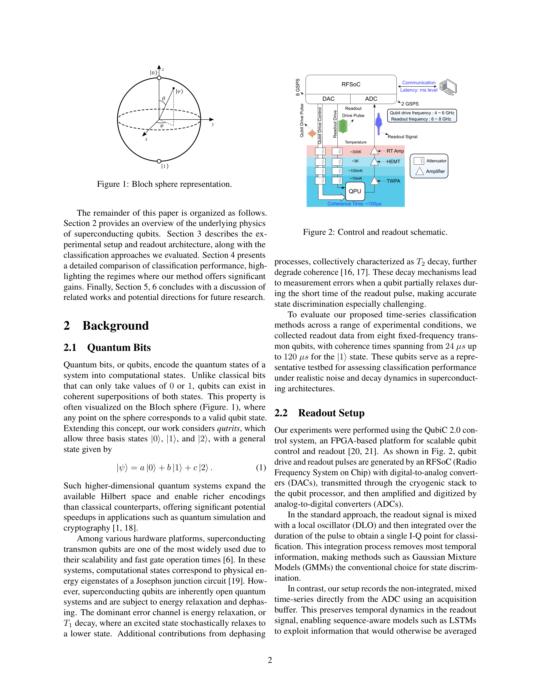
 *Figure 2: Control and readout schematic.* 초전도 큐비트의 측정 오류를 줄이기 위해 시간 해상도를 보존한 원본 아날로그 신호에 LSTM 네트워크를 적용하여 기존의 통합 신호 기반 클러스터링 방식을 능가하는 양자 상태 판별 방법을 제안한다.
본 논문은 양자 측정 오류라는 실질적이고 중요한 문제에 시계열 기계학습을 창의적으로 적용하여 기존 방식을 능가하는 성과를 달성했다. 실험 기반 검증과 명확한 동기 부여는 우수하나, 계산 오버헤드와 확장성에 대한 심화 분석 및 더 광범위한 실험 검증이 있으면 더욱 강력한 기여가 될 수 있다.
Tumula information and doubly minimized Petz Renyi lautum information
양자정보이론에서 상호정보의 역방향 아날로그인 lautum 정보의 이중 최소화 변형인 tumula 정보와 대응하는 Petz Rényi 버전을 도입하고, 양자 가설 검정에서의 운영적 해석을 제공한다.
본 논문은 양자정보이론의 상관성 척도 체계에 새로운 이중 최소화 역방향 변형을 도입하고, 양자 가설 검정에서의 엄밀한 운영적 해석을 제공함으로써 기존 이론을 자연스럽게 확장한다. 특히 Petz 발산 기반의 대칭성 관계와 보편적 순열 불변 상태를 이용한 표현은 이론적 우아함을 더하며, 채널 정보량으로의 확장은 향후 실제 응용 가능성을 열어준다.